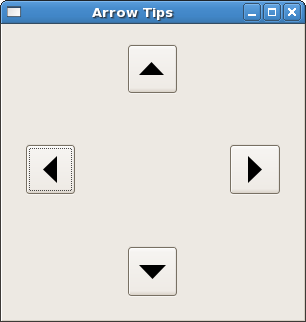

|
Gtk2Hs Tutorial |
||
|---|---|---|
|
|
||
The Arrow widget draws an arrowhead, facing in a number of possible directions and having a number of possible styles. Like the Label widget, it emits no signals.
There are only two functions for manipulating an Arrow widget:
arrowNew :: ArrowType -> ShadowType -> IO Arrow arrowSet :: ArrowClass self => self -> ArrowType -> ShadowType -> IO () |
The ArrowType has 5 constructors:
ArrowUp ArrowDown ArrowLeft ArrowRight ArrowNone |
The ShadowType also has 5 constructors:
ShadowNone ShadowIn ShadowOut ShadowEtchedIn ShadowEtchedOut |
Tooltips are the little text strings that pop up when you leave your pointer over a button or other widget for a few seconds.
Widgets that do not receive events (widgets that do not have their own window) will not work with tooltips.
The first call you will use creates a new tooltip. You only need to do this once for a set of tooltips.
tooltipsNew :: IO Tooltips |
Then, for every widget, use:
tooltipsSetTip :: (TooltipsClass self, WidgetClass widget) => self -> widget -> String -> String -> IO () |
The first argument is the tooltip you've already created, followed by the widget you wish to have this tooltip pop up for, and the text you wish it to say. The last argument is a text string that can be used as an identifier.
You can turn the tips associated with a Tooltips value on or off using:
tooltipsEnable :: TooltipsClass self => self -> IO () tooltipsDisable :: TooltipsClass self => self -> IO () |
Here's an example to illustrate the use of arrows and tooltips.

The window above has been resized from its default size, to show how the packing in a table preserves the spacing of the buttons with their arrows.
Note: the tooltips don't work with GHCi (on my machine) but they do when compiled. You cannot see them in the screenshot, of course.
import Graphics.UI.Gtk
main :: IO ()
main = do
initGUI
window <- windowNew
set window [windowTitle := "Arrow Tips",
windowDefaultWidth := 200,
windowDefaultHeight := 200, containerBorderWidth := 20 ]
table <- tableNew 5 5 True
containerAdd window table
button1 <- buttonNew
button2 <- buttonNew
button3 <- buttonNew
button4 <- buttonNew
tableAttachDefaults table button1 0 1 2 3
tableAttachDefaults table button2 2 3 0 1
tableAttachDefaults table button3 4 5 2 3
tableAttachDefaults table button4 2 3 4 5
tlt <- tooltipsNew
arrow1 <- arrowNew ArrowLeft ShadowEtchedIn
containerAdd button1 arrow1
tooltipsSetTip tlt button1 "West" "T1"
arrow2 <- arrowNew ArrowUp ShadowEtchedOut
containerAdd button2 arrow2
tooltipsSetTip tlt button2 "North" "T2"
arrow3 <- arrowNew ArrowRight ShadowEtchedIn
containerAdd button3 arrow3
tooltipsSetTip tlt button3 "East" "T3"
arrow4 <- arrowNew ArrowDown ShadowEtchedOut
containerAdd button4 arrow4
tooltipsSetTip tlt button4 "South" "T4"
tooltipsEnable tlt
widgetShowAll window
onDestroy window mainQuit
mainGUI
|
|
Labels |
|
Dialogs, Stock Items Progress Bars |